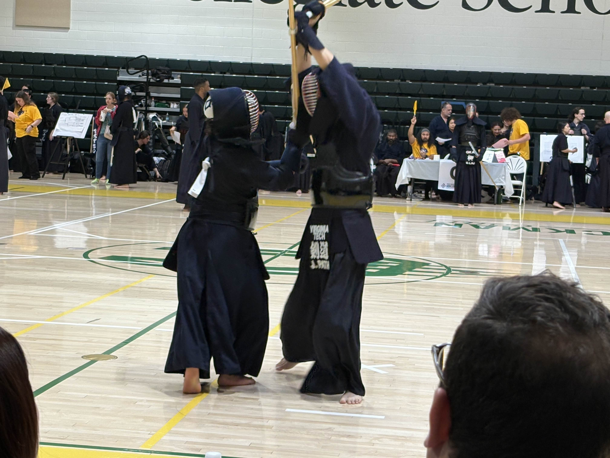

jaden pathammavong
incoming early associate consultant intern at ibm.
Computational modeling and data analytics at virginia tech.
recorded in virginia / 042126.
all rights reserved.
As a third-year student at Virginia Tech studying Computational Modeling and Data Analytics (CMDA), I have a strong interest in the intersection of design, technology, and data. I am also interested in economics. I like finding the math behind human decisions. I spend my time exploring how quantitative models can explain the psychological and economic ways we value and exchange resources.
In addition to my developing skills in data analysis, visualization, mathematics, and statistics. I'm currently exploring data engineering, improving sql, python, and databricks. I want to work with cloud, data, and clients.
Outside of academics, I practice Kendo, a Japanese martial art that has taught me focus, discipline, and respect. I’m also deeply involved in music, I am apart of Virginia tech's wind ensemble and philharmonic orchestra. Continuing my dedication to playing helps me stay creative and balanced both in life and in problem-solving.
[ gallery // ] +
